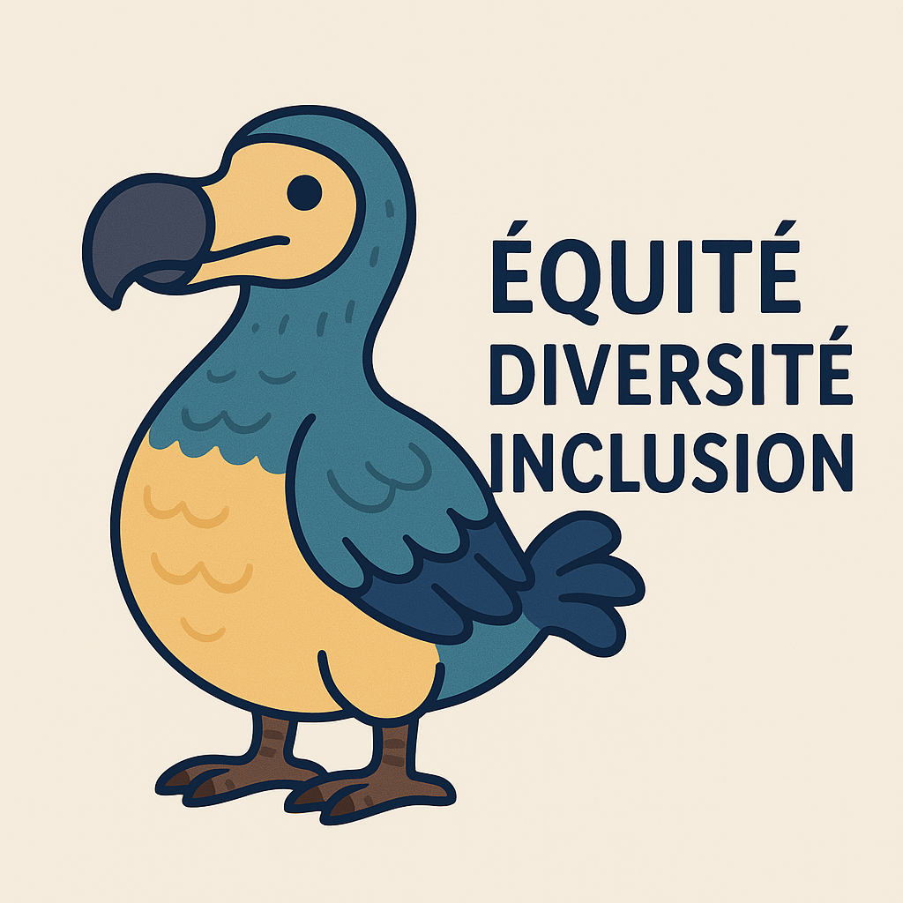

Bienvenue
Ce site éducatif vous guidera à travers les défis soulevés par l'équité, la diversité et l'inclusion (EDI). Vous découvrirez ce que sont les EDI et vous apprendrez plus sur les défis qui en sont soulevés. Vous pourrez même faire un petit quiz pour évaluer vos connaissances et vos choix dans le domaine. Profitez d’un contenu riche et interactif pour transformer vos méthodes de gestion et intégrer pleinement les valeurs d’EDI.
Concepts EDI
L’Équité, la Diversité et l’Inclusion sont des piliers essentiels pour toute organisation moderne.
- L’équité consiste à offrir des opportunités adaptées aux besoins spécifiques de chacun.
- La diversité valorise les différences culturelles, professionnelles et personnelles.
- L’inclusion vise à créer un environnement où chacun se sent accepté et valorisé.
Ces principes, lorsqu'ils sont bien appliqués, améliorent la cohésion des équipes et optimisent la performance globale.
Bonnes Pratiques
Voici quelques recommandations pour intégrer l’EDI dans vos projets :
- Valoriser la diversité des parcours
- Sensibiliser aux biais inconscients
- Structurer le processus de sélection
- Diversifier les canaux de recrutement
- Utiliser un langage inclusif
L’application rigoureuse de ces pratiques favorise un environnement de travail harmonieux et performant.
Défis
L’intégration de l’EDI peut rencontrer divers obstacles. Voici quelques défis et leurs solutions :
- Recrutement biaisé : Mettre en place un processus inclusif
- Difficulté d'intégration : Prévoir un programme d’accueil structuré
- Communication inefficace : Créer des espaces de dialogue
- Manque de sensibilisation : Organiser des formations continues
- Manque de sécurité psychologique : Établir des procédures claires de signalement
Jeu Interactif
Vous êtes chef de projet. Saurez-vous prendre des décisions justes, inclusives et efficaces ? Ce jeu vous plonge dans des situations réalistes pour vous sensibiliser aux principes d’EDI. Prenez vos décisions, recevez des retours, et voyez comment vos choix influencent l'équipe !
Références
Voici quelques références bibliographiques utiles pour approfondir vos connaissances :
- [1] Intégration de l’EDI en gestion de projet, J. Dupont, 2020
- [2] Diversité et performance, M. Tremblay, 2021
Actualités
Restez informé des dernières tendances et innovations en matière d’EDI. Découvrez des études de cas, interviews d’experts et articles de fond sur l’impact des initiatives EDI dans divers secteurs. Nos actualités sont mises à jour régulièrement.
À propos
EDI Dodo Déterminés est un projet éducatif dédié à la promotion des valeurs d’Équité, Diversité et Inclusion. Notre mission : fournir des ressources pratiques et accessibles pour faire progresser la culture EDI dans toutes les sphères de la société.
🎥 Ressources Vidéos EDI
Cette vidéo illustre comment les microagressions peuvent passer inaperçues mais avoir un impact significatif.
Utiliser les bons pronoms est essentiel pour le respect de l'identité de chacun.